在本课程中您将会学到：
- 在腾讯云创建 Elasticsearch 集群，Kibana 图形管理界面的基本使用。
- 学习可观测性的基本概念和实施步骤
- 搭建和配置服务健康检查的探针（Heartbeat）
- 部署采集操作系统性能监控指标的流程 （Metricbeat）
- 配置操作系统日志的采集和分析工具（Filebeat）
- 搭建用于 APM 追踪分析的后台服务（Elastic APM）
- 运行一个多层架构的宠物诊所应用，对各个子服务进行 APM 监控埋点
- 配置常用的服务质量监控大屏（SRE/SLO）
本课程基于腾讯云环境。详细的环境准备和前置需求见下一节。
示例应用
本工作坊课程基于如下的应用系统。
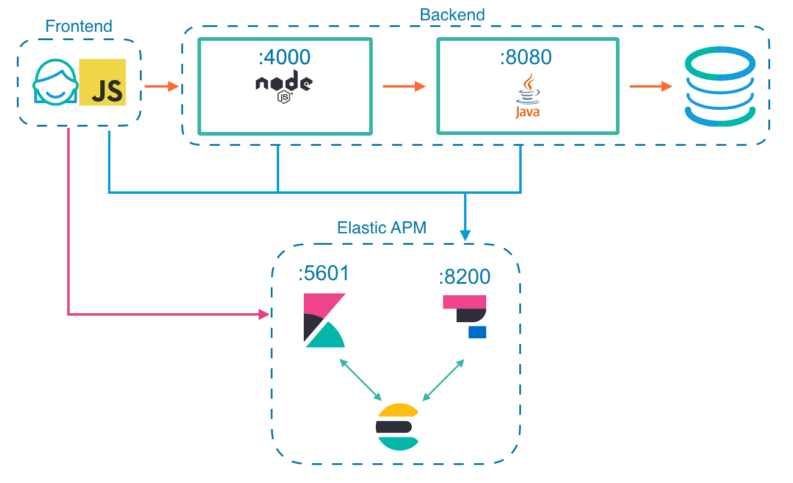
示例应用概况：
- 多层宠物诊所应用系统
- 所有组件都部署在一个虚拟机上
- 包括前端、后端和内置的数据库
- 使用到的而技术有 JavaScript、NodeJs 和 Java Spring 等。
- 使用 Nginx 做前端的接入层
- 本应用系统是被监控的对象
Elastic Stack 的基本状况：
- 版本 7.5.1
- Elastic Stack 的相关组件包括 Elasticsearch、Kibana、APM、Filebeat、Metricbeat 和 Heartbeat。
- 宠物诊所应用、Elastic APM Server 和 Heartbeat 探针服务都部署在同一个虚拟机上。
可观测性构建四步法
可观测性依赖于应用系统自身和监控工具平台的配合实现。
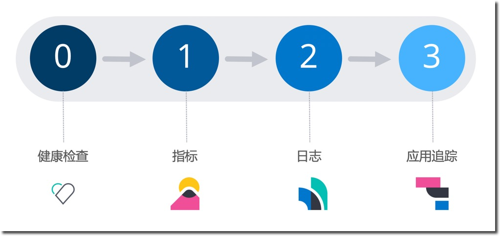
分层次的构建可观测性的推荐过程如下：
- STEP0：使用 Heartbeat 构建轻量灵活的服务健康检查能力
- STEP1：使用 Metricbeat 构建全面细致的指标采集能力
- STEP2：使用 Filebeat 构建高维度的日志采集能力
- STEP3：使用 APM 构建分布式应用系统的全堆栈追踪能力
实施服务质量监控
通过以上的四个构建步骤，使用 Elastic Stack 实施服务可观测性的四大监控能力的构建，搭建持续统一的运维管理工具平台。
使用 SRE 基于‘用户旅程'或‘系统边界'的 SLO 分析设定方法，从 Elastic Stack 的已有数据采集能力中，选取第一批直接可用的 SLI 采集点。在基于 SLO 的监控过程中，不断的优选 SLI，调整告警的数量和质量，为开发团队提供持续有效的服务稳定性反馈。
最后，通过 SLO 服务质量目标监控大屏，实时的将生产环境的状态反馈给所有相关团队。最后收尾以基于 SLO 的服务故障监控告警（本课程不涉及告警的配置，告警可以用 Elastic Stack 的 watcher 实现）。
检查清单如下：
- 创建一台 CentOS 虚拟机（本教程中使用 CentOS 7.6）。
- 虚拟机的网络和 Elasticsearch 服务的网段可以互通，并且所有端口都可以互通。
- 可以通过浏览器正常登录使用 Kibana 服务。
- 可以用 SSH 客户的正常访问以上 CentOS 虚拟机。
CentOS 虚拟机开放如下入栈端口：
- TCP 8200 0.0.0.0/0
- TCP 4000 0.0.0.0/0
- TCP 80 0.0.0.0/0
- TCP 22 0.0.0.0/0
创建虚拟机用于本次培训的所有测试，也可以使用已有虚拟机，和已经创建的 Elasticsearch 服务完成本培训的所有练习。
创建一个 Elasticsearch 集群
登录腾讯云控制台，搜索 Elasticsearch Service 产品，进入该产品控制台，点击 "新建" 集群按钮。
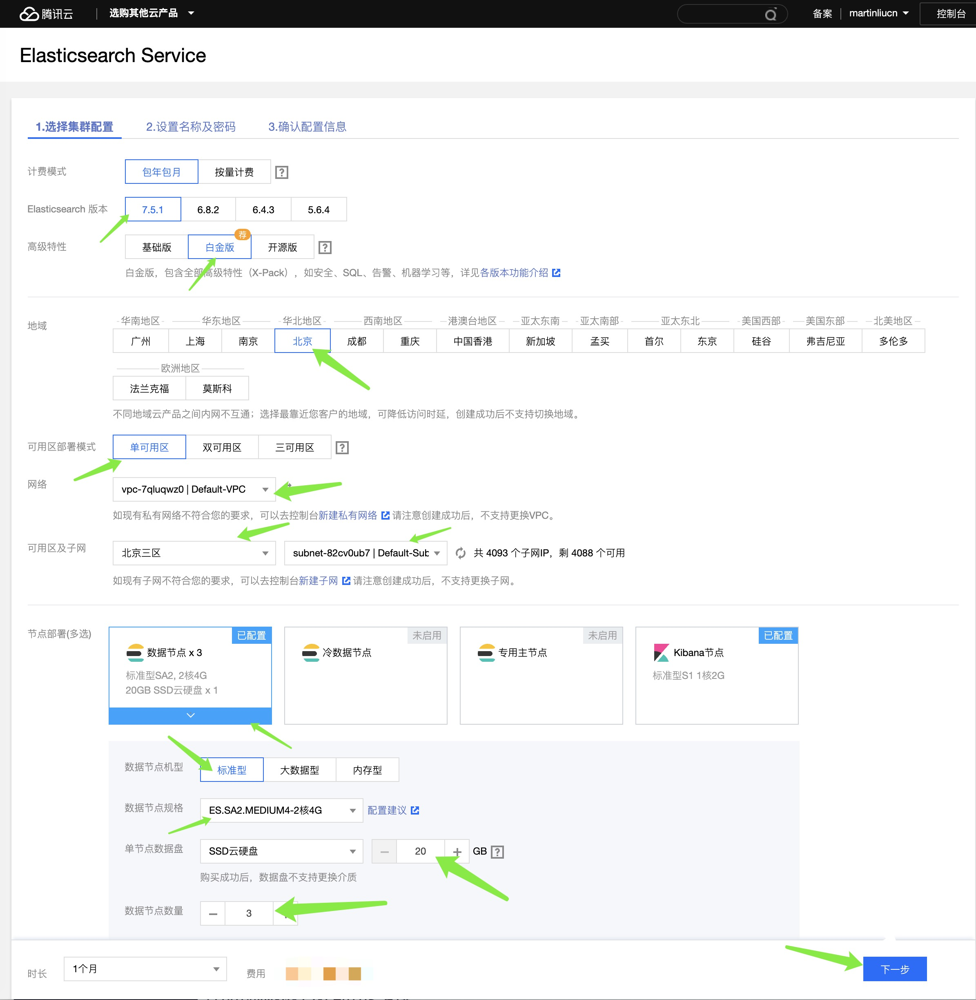
注意：以上配置选项适用于本次培训的需求，其中数据节点数量还可以降低到 2个。Elasticsearch 的版本选择最高，高级特性选择"白金版"
在点击 "下一步" 按钮之后，输入集群名、密码等信息，然后完成集群的创建。
记录集群的基础信息
在集群成功创建之后，点击 Kibana 访问该集群的对应的 Kibana 图形控制界面，验证 elastic 用户的密码是否可用。
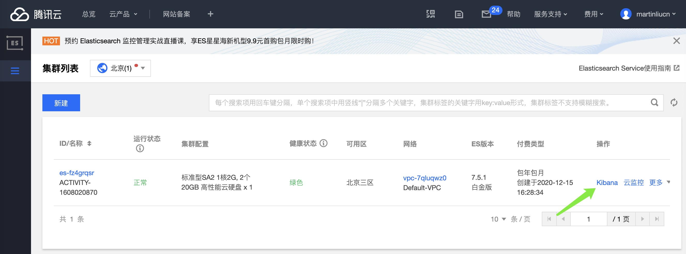
点击集群的名称，查看访问控制部分，记录这个集群的内网访问地址，例如：172.21.16.16:9200 备用。
点击集群管理的 ‘可视化配置' 标签， 点击启用 Kibana 的内网访问地址，并记录这个网址备用。例如： http://es-fz4grqsr.internal.kibana.tencentelasticsearch.com:5601
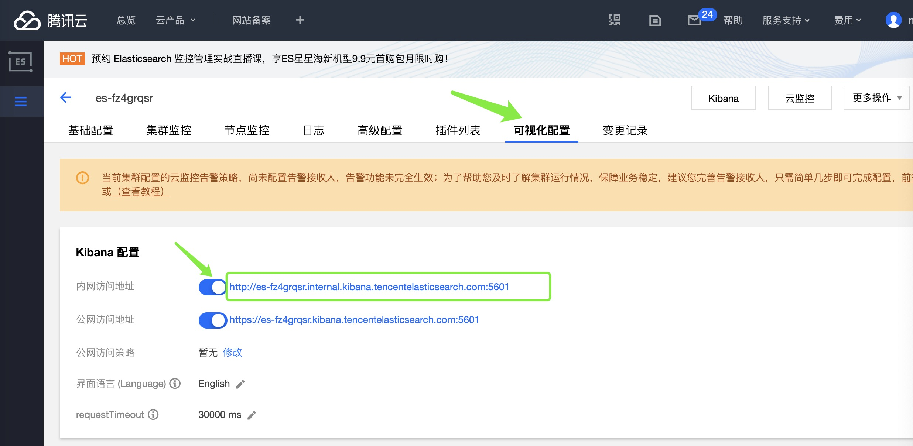
注意：以上备注的 Elasticsearch 集群的内网访问地址，和 Kibana 的内网访问地址会在下面的配置操作中使用到。
最后，需要在 Kibana 的开发者工具里调整一个集群参数。
PUT _all/_settings
{
"refresh_interval": "1s"
}
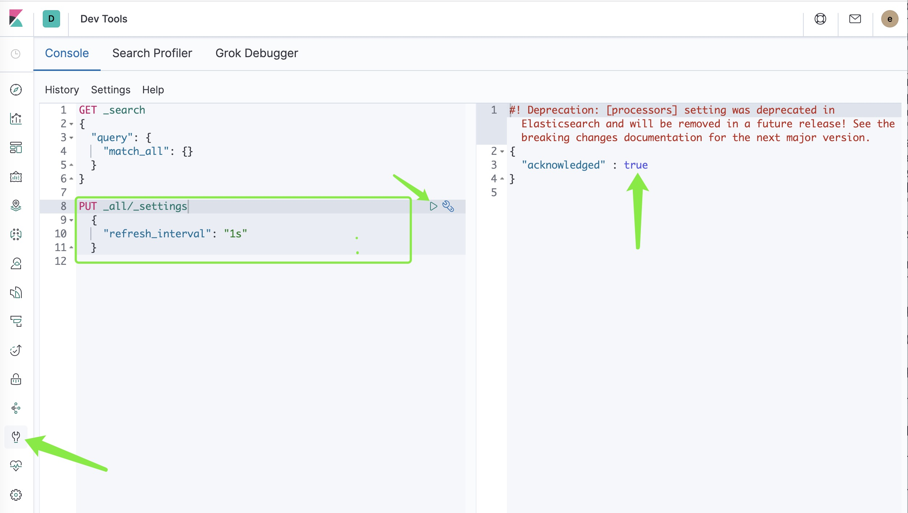
点击左侧的开发者工具图标，在 Console 的代码输入区域中输入以上代码片段，将光标移动到 PUT 这一行，点击哪一行右侧的三角形播放按钮，等待右侧出现 true 的执行结果即可。
虚拟机环境基础配置
安装必要的软件包，命令如下：
yum install -y java-11-openjdk.x86_64 nodejs git nginx
然后下载本次培训所需要的示例程序和相关配置文件。
git clone https://github.com/martinliu/elastic-labs-qq.git
cd elastic-labs-qq
cd petclinic
npm install
在以上命令中， git clone 和 npm install 可能需要花费 5 到 10 分钟不等。请确保以上几条命令都正常执行完毕。
在这一节中，你将学习到：
- 安装 Heartbeat 探针服务
- 配置主配置文件
- 初始化和运行 Heartbeat 服务
- 在 Kibana 中查看 Uptime app 中的数据
运行 Heartbeat 服务
SSH 登录 CentOS 虚拟机后，安装 Heartbeat 软件包。
yum install https://mirrors.cloud.tencent.com/elasticstack/7.x/yum/7.5.1/heartbeat-7.5.1-x86_64.rpm
进入 heartbeat 的配置文件目录中，cd /etc/heartbeat/。
编辑主配置文件
修改名为 heartbeat.yml 的配置文件，确保其中的内容至少包括：
heartbeat.config.monitors:
path: ${path.config}/monitors.d/*.yml
reload.enabled: true
reload.period: 5s
heartbeat.monitors:
- type: http
id: my-monitor
name: my-kibana-service
urls: ["https://es-fz4grqsr.kibana.tencentelasticsearch.com:5601/"]
schedule: '@every 5s'
setup.template.settings:
index.number_of_shards: 1
index.codec: best_compression
setup.kibana:
output.elasticsearch:
hosts: ["172.21.16.16:9200"]
username: "elastic"
password: "Elastic@1234#"
processors:
- add_observer_metadata:
geo:
name: China-BJ
location: "39.907568, 116.3972302"
也可以用以上内容替换原始配置文件中的内容。以上配置文件的范例，见 git clone 下载的目录。
参数配置简要介绍：
- 每 5 秒钟检查
monitors.d目录中是否有服务探针配置文件更新 - 默认启动一个名为 my-monitor 的 http 探针，检查目标 Kibana 服务的状态
- 将服务健康检查的数据输出索引到以上创建的 Elasticsearch 集群服务，即 172.21.16.16:9200
- 在 output.elasticsearch 的部分使用 elastic 账号的密码
- 为本健康检查服务器配置可观测性地域元数据，名称为 China-BJ 的经纬度
初始化和运行 Heartbeat 服务
运行下面的命令初始化 Heartbeat 服务，并在命令行中验证 Heartbeat 访问是否能正常工作。
命令如下：
heartbeat setup
heartbeat -e
命令参数解释：
- setup 的作用是初始化 Heartbeat 的索引，导入相关的数据管理策略
- -e 启动 Heartbeat 服务，将服务运行的日志显示在控制台
如果以上命令都没有报错，则继续下面的操作。
查看 Uptime 应用
进入 Kibana 页面，点击左上角的菜单，在左侧菜单中点击 Uptime 链接。
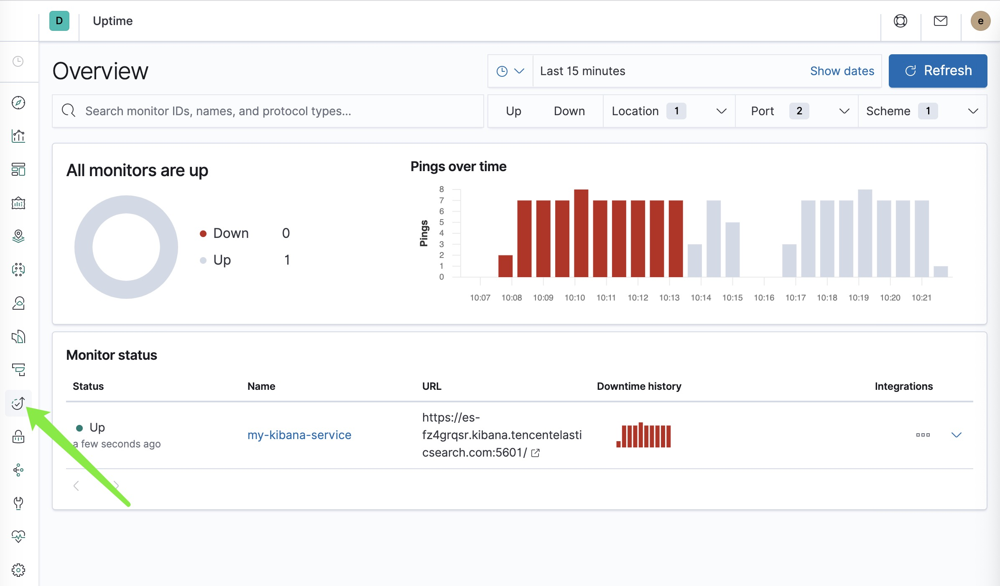
点击这个名为 ‘my-kibana-service' 的连接查看，这个采集点的监控结果。
最后在命令行里按 ctrl + c 终止 ‘heartbeat -e' 命令。然后运行一下命令，启动 heartbeat 后台服务。
systemctl start heartbeat-elastic.service
systemctl enable heartbeat-elastic.service
systemctl status heartbeat-elastic.service
安装 Metricbeat
通过网络安装 Metricbeat 软件包。
命令如下：
yum install -y https://mirrors.cloud.tencent.com/elasticstack/7.x/yum/7.5.1/metricbeat-7.5.1-x86_64.rpm
进入 Metricbeat 的配置文件目录cd /etc/metricbeat/，查看 Metricbeat 的配置目录，熟悉目录中的结构和文件。
初始化 Metricbeat 服务
在命令行下运行下面的两条命令，在执行前根据下面的参数解释，替换其中的三个参数。
metricbeat setup -e --index-management --dashboards \
-E output.elasticsearch.hosts=['172.21.16.16:9200'] \
-E output.elasticsearch.username=elastic \
-E output.elasticsearch.password=Elastic@1234# \
-E setup.kibana.host=es-fz4grqsr.internal.kibana.tencentelasticsearch.com:5601
命令参数解释：
- setup 命令会初始化相关索引和配套的管理策略 ， 这个步骤可能会持续 2~3 分钟。
- elasticsearch.hosts Elasticsearch 集群的内网服务地址
- elasticsearch.password 账号 elastic 的密码
- setup.kibana.host 内网 Kibana 的访问地址
等待该命令的执行结束后，会输出类似如下的信息。
template metricbeat-7.5.1 to Elasticsearch
2020-12-16T15:55:02.537+0800 INFO template/load.go:101 template with name 'metricbeat-7.5.1' loaded.
2020-12-16T15:55:02.538+0800 INFO [index-management] idxmgmt/std.go:293 Loaded index template.
2020-12-16T15:55:03.092+0800 INFO [index-management] idxmgmt/std.go:304 Write alias successfully generated.
Index setup finished.
Loading dashboards (Kibana must be running and reachable)
2020-12-16T15:55:03.092+0800 INFO kibana/client.go:117 Kibana url: http://es-fz4grqsr.internal.kibana.tencentelasticsearch.com:5601
2020-12-16T15:55:03.620+0800 INFO kibana/client.go:117 Kibana url: http://es-fz4grqsr.internal.kibana.tencentelasticsearch.com:5601
2020-12-16T15:55:04.838+0800 INFO add_cloud_metadata/add_cloud_metadata.go:89 add_cloud_metadata: hosting provider type not detected.
2020-12-16T15:57:25.194+0800 INFO instance/beat.go:780 Kibana dashboards successfully loaded.
Loaded dashboards
在 Kibana 中查看 metricbeat 的索引、索引管理策略和相关的仪表板。
- 点击左侧
Dashboard图标，查看 Metricbeat 相关的仪表板。 - 点击左侧
Management图标，点击 Elasticsearch –> Index Lifecycle Policies 选项，在策略清单中选中 ‘metricbeat-7.5.1'， 在页面的底部，找到 Delete phase 部分，点击激活删除策略，在 ‘Timing for delete phase' 中输入120这意味着，rollover 之后的数据文件中，超过了120天的数据就会被删除。目前这个演示系统并没有使用 热-温-冷 等复杂的索引数据生命周期管理策略。 - 点击 ‘heartbeat-7.5.1' 的策略，也设置同样的这个 120 天删除的策略。后续的索引初始化配置完毕之后，也在这里做相同的操作。从而熟悉掌握这个配置。
编辑主配置文件
备份和查看默认的主配置文件 metricbeat.yml；并将其替换为以下内容。
#=========================== Modules configuration ============================
metricbeat.config.modules:
path: ${path.config}/modules.d/*.yml
reload.enabled: true
reload.period: 10s
#=========================== Elasticsearch output =============================
output.elasticsearch:
hosts: ["172.21.16.16:9200"]
username: "elastic"
password: "Elastic@1234#"
#=============================== Processors ===================================
processors:
- add_host_metadata:
netinfo.enabled: true
cache.ttl: 5m
geo:
name: bj-dc-01
location: 35.5528, 116.2360
continent_name: Asia
country_iso_code: CN
region_name: Beijing
region_iso_code: CN-BJ
city_name: Beijing
- add_cloud_metadata: ~
- add_docker_metadata: ~
- add_kubernetes_metadata: ~
- add_fields:
target: ''
fields:
service.name: 'Pet Clinic'
service.id: 'petclinic-vm'
#==================== Best Practice Configuration ==========================
setup.ilm.check_exists: false
logging.level: error
queue.spool: ~
以上个别参数解释：
- output.elasticsearch 部分配置了，Elasticsearch 集群的内网访问地址，elastic 的账户密码
- netinfo.enabled: true 收集所有网卡的配置信息
- service.name 和 service.id 设定运行在本操作系统上的应用系统的名字，用于丰富每一个指标采集点的元数据
- setup.ilm.check_exists: false 禁用索引 ilm 策略检查，避免无用动作
- logging.level: error 把Beats自身的日志记录调到最低级别降低
- queue.spool: ~ 开启本地默认的端点缓存行为
注意：这个配置文件中的 Elasticsearch 部分使用了管理员账户信息，在生产上不推荐这么做，请参考这篇文章将其替换为密码形式配置。 https://martinliu.cn/posts/beats-implement-on-qcloud/
测试配置文件是否语法正确。在提示 OK 的情况下，启用并开启 metricbeat 的后台指标采集服务。
metricbeat test config
systemctl enable metricbeat
systemctl start metricbeat
systemctl status metricbeat
查看相关仪表板
Metricbeat 采集代理程序默认会启用操作系统指标采集的模块，setup 命令会一次性的将所有 Metricbeat 预制的上百种仪表板加载到后台，供 Kibana 浏览和搜索指标数据使用。
查看 Metricbeat 的相关仪表板
- 打开 Kibana 界面
- 打开左侧菜单栏，点击 ‘Dashboard' 选项
- 在页面的搜索框中输入 system 后，查看 Metricbeat 自带的仪表板，它们是 setup 命令导入的。
- 点击查看名为 "[Metricbeat System] Overview ECS" 的仪表板。
- 在 System Overview 和 Host Overview 的两个视图中切换查看
Host Overview 的显示结果如下。
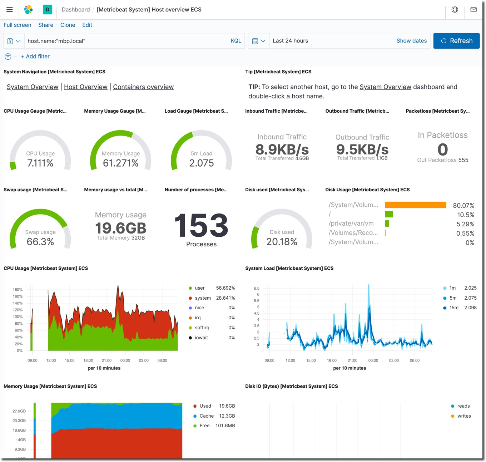
视图解释说明：
- System Overview 是当前所有被监控系统的指标统计汇总
- Host Overview 是某一个操作系统的监控指标展示
启用 Nginx 监控模块
Metricbeat 默认采集系统的指标。我们之前在这个服务器上安装了 Nginx，下面启用 Metricbeat 对 Nginx 的监控模块。
metricbeat modules enable nginx
metricbeat modules list
首先，需要修改 Nginx 服务器的配置文件，启用 Nginx 的 ngx_http_stub_status 模块。 编辑 /etc/nginx/nginx.conf 文件，在 Server 段落中增加以下内容。
location /server-status {
stub_status on;
access_log off;
}
修改好之后，重启 Nginx 服务，并测试验证该模块是否已经启用。
systemctl restart nginx
curl localhost/server-status
其次，查看一下 Metricbeat 的 nginx 的配置文件，并不需要做任何修改。
cat /etc/metricbeat/modules.d/nginx.yml
最后，在浏览器的网址中输入 CentOS 的外网 IP 地址，访问 Nginx 的默认页面，产生一些流量。然后在 Dashboard 中搜索并查看 Nginx 的仪表板。如下图所示：
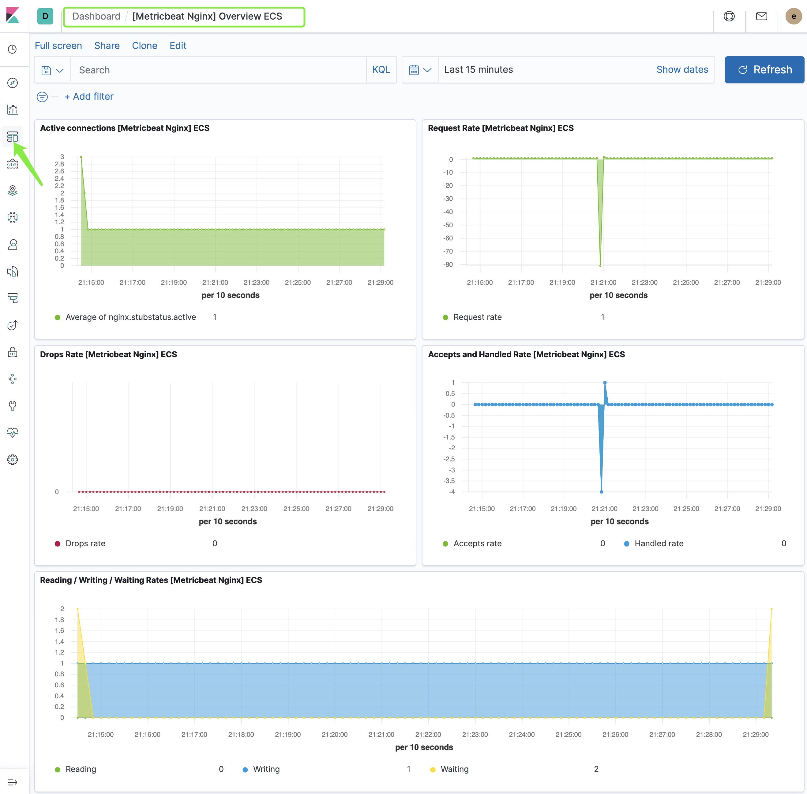
查看 Metrics 应用
在 Kibana 的左侧栏菜单中，点击 ‘Metrics' 图标。
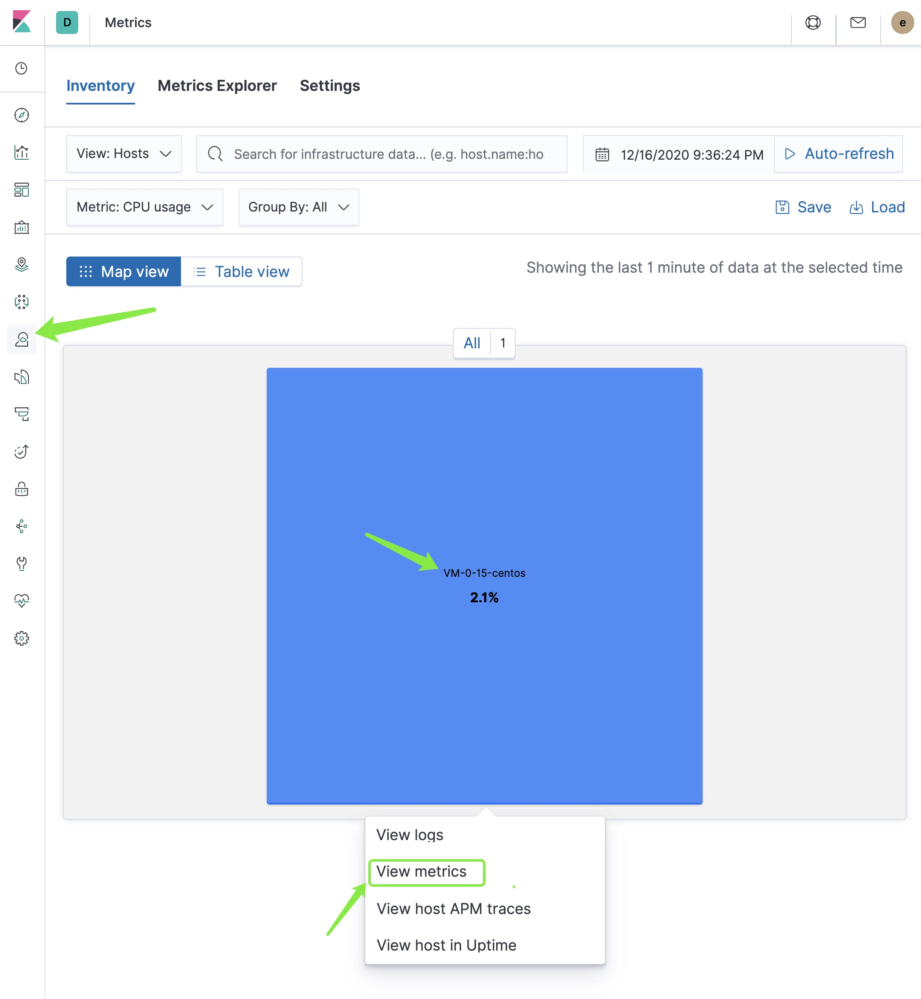
在这里可以做Uptime、指标、日志和 APM 的关联分析浏览。点击 ‘View metrics' 后查看这台 CentOS 虚拟机的监控指标。
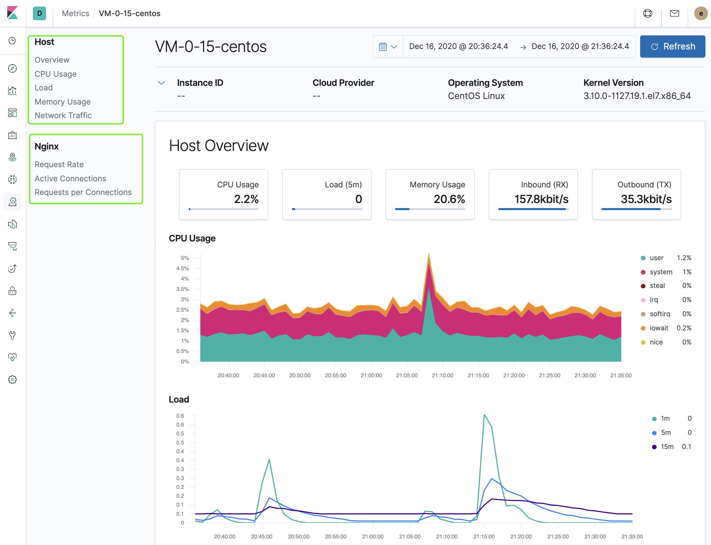
如上图所示，我们看到 ‘Host' 下面显示了系统监控指标的几个指标；‘Nginx' 下面显示了 Nginx 的相关指标。
在后续的课程中，我们逐步添加基于主机的日志关联分析，和 APM 关联分析。
安装 Filebeat
通过网络安装 Filebeat 软件包。命令如下：
yum install https://mirrors.cloud.tencent.com/elasticstack/7.x/yum/7.5.1/filebeat-7.5.1-x86_64.rpm
进入 cd /etc/metricbeat/ 目录，熟悉 Filebeat 配置文件的目录结构和内容。
初始化 Filebeat 服务
在命令行下运行下面的两条命令，在执行前根据下面的参数解释，替换其中的三个参数。
filebeat setup -e --index-management --dashboards \
-E output.elasticsearch.hosts=['172.21.16.16:9200'] \
-E output.elasticsearch.username=elastic \
-E output.elasticsearch.password=Elastic@1234# \
-E setup.kibana.host=es-fz4grqsr.internal.kibana.tencentelasticsearch.com:5601
命令参数解释：
- setup 命令会初始化相关索引和配套的管理策略 ， 这个步骤可能会持续 2~3 分钟。
- elasticsearch.hosts Elasticsearch 集群的内网服务地址
- elasticsearch.password 账号 elastic 的密码
- setup.kibana.host 内网 Kibana 的访问地址
等待该命令的执行结束后，会输出类似如下的信息。
2020-12-16T22:01:36.164+0800 INFO template/load.go:169 Existing template will be overwritten, as overwrite is enabled.
2020-12-16T22:01:36.343+0800 INFO template/load.go:109 Try loading template filebeat-7.5.1 to Elasticsearch
2020-12-16T22:01:36.535+0800 INFO template/load.go:101 template with name 'filebeat-7.5.1' loaded.
2020-12-16T22:01:36.535+0800 INFO [index-management] idxmgmt/std.go:293 Loaded index template.
2020-12-16T22:01:36.806+0800 INFO [index-management] idxmgmt/std.go:304 Write alias successfully generated.
Index setup finished.
Loading dashboards (Kibana must be running and reachable)
2020-12-16T22:01:36.806+0800 INFO kibana/client.go:117 Kibana url: http://es-fz4grqsr.internal.kibana.tencentelasticsearch.com:5601
2020-12-16T22:01:37.217+0800 INFO kibana/client.go:117 Kibana url: http://es-fz4grqsr.internal.kibana.tencentelasticsearch.com:5601
2020-12-16T22:01:39.076+0800 INFO add_cloud_metadata/add_cloud_metadata.go:89 add_cloud_metadata: hosting provider type not detected.
2020-12-16T22:02:30.008+0800 INFO instance/beat.go:780 Kibana dashboards successfully loaded.
Loaded dashboards
在 Kibana 中查看 filebeat 的索引、索引管理策略和相关的仪表板。
- 点击左侧
Dashboard图标，查看 Filebeat 相关的仪表板。 - 点击左侧
Management图标，点击 Elasticsearch –> Index Lifecycle Policies 选项，在策略清单中选中 ‘filebeat-7.5.1'， 在页面的底部，找到 Delete phase 部分，点击激活删除策略，在 ‘Timing for delete phase' 中输入120这意味着，rollover 之后的数据文件中，超过了120天的数据就会被删除。目前这个演示系统并没有使用 热-温-冷 等复杂的索引数据生命周期管理策略。
本步骤是一次性的，在后续的其它被管理节点上就不需要再次执行 Beats 的任何 setup 命令了。
编辑主配置文件
查看默认的主配置文件 filebeat.yml；确保配置文件中具有以下内容。
#=========================== Filebeat inputs =============================
filebeat.inputs:
- type: log
enabled: false
paths:
- /var/log/*.log
#============================= Filebeat modules ===============================
filebeat.config.modules:
path: ${path.config}/modules.d/*.yml
reload.enabled: true
reload.period: 60s
#-------------------------- Elasticsearch output ------------------------------
output.elasticsearch:
hosts: ["172.21.16.16:9200"]
username: "elastic"
password: "Elastic@1234#"
#================================ Processors =====================================
processors:
- add_host_metadata:
netinfo.enabled: true
cache.ttl: 5m
geo:
name: bj-dc-01
location: 35.5528, 116.2360
continent_name: Asia
country_iso_code: CN
region_name: Beijing
region_iso_code: CN-BJ
city_name: Beijing
- add_cloud_metadata: ~
- add_docker_metadata: ~
- add_kubernetes_metadata: ~
- add_fields:
target: ''
fields:
service.name: 'Pet Clinic'
service.id: 'petclinic-vm'
#==================== Best Practice Configuration ==========================
setup.ilm.check_exists: false
logging.level: error
queue.spool: ~
以上参数解释：
- netinfo.enabled: true 收集所有网卡的配置信息
- service.name 和 service.id 是运行在本操作系统上的应用系统的名字
- 以上配置信息中的
output.elasticsearch需要修改为你的 Elasticsearch 集群的 elastic 账号信息。
测试配置文件是否语法正确。在提示 OK 的情况下，启用并开启 filebeat 的日志采集服务。
filebeat test config
filebeat -e
如果以上命令不报错的话，继续下面的步骤启用 Filebeat 模块和启动 Filebeat 服务。
Filebeat 的 processors 处理器机制可以实现丰富的日志字段丰富和处理，基于 Elastic ECS 通用数据定义的日志元数据丰富在本课程中不作讲解。请大家课后深入学习。另外应用程序和日志采集工具的配合也不在此做深入讨论，请开发者在设计程序的日志输出机制时，同时考虑到后期的日志采集工具。
初始化和运行 Filebeat 服务
启用 Filebeat 的系统日志采集和 Nginx 服务日志采集。
filebeat modules enable system nginx
systemctl enable filebeat
systemctl start filebeat
systemctl status filebeat
到目前为止实现了 Filebeat 日志采集代理的后台相关组件初始化，Filebeat 采集代理开始持续的采集操作系统的日志。
查看 Filebeat 相关仪表板
查看 Filebeat 的相关仪表板
- 打开 Kibana 界面
- 打开左侧菜单栏，点击 ‘Dashboard' 选项
- 在页面的搜索框中输入 system 后，查看 Filebeat 自带的仪表板，它们是 setup 命令导入的。
- 点击查看名为 "[Filebeat System] Syslog dashboard ECS" 的仪表板。
该仪表板内有若干个可以切换的视图：
- Syslog
- Sudo commands
- SSH logins
- New users and groups
Syslog 视图的显示效果如下：
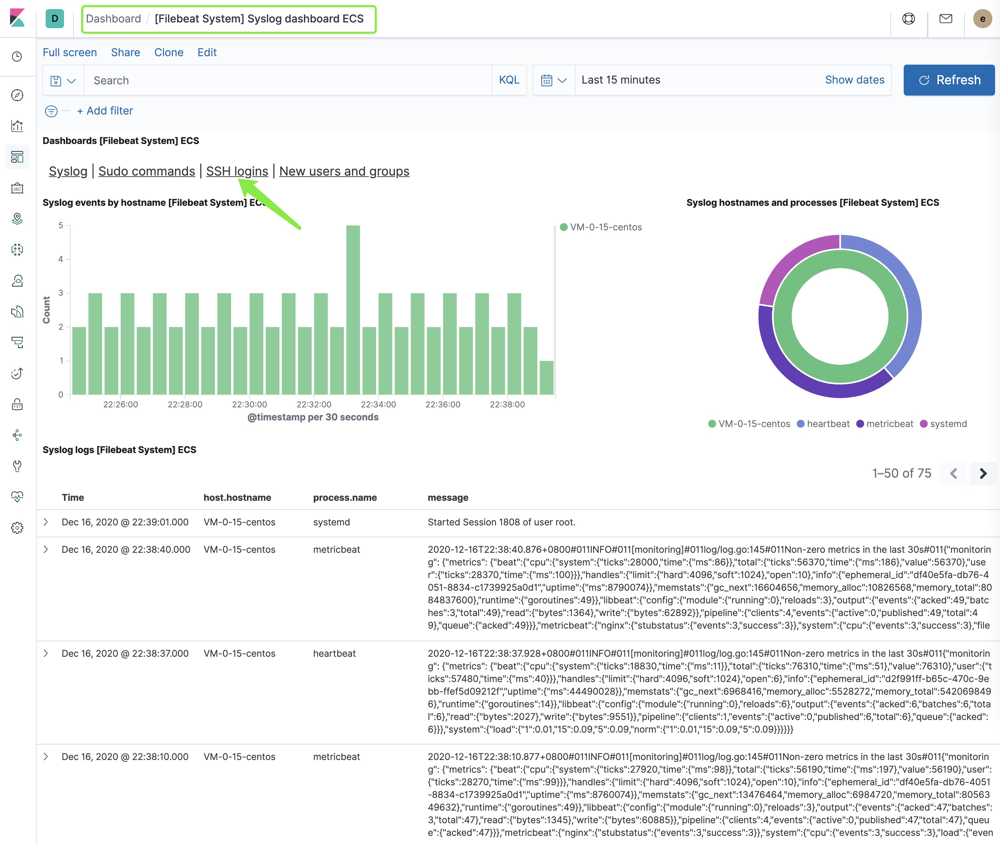
点击 ‘SSH logins' 后可以查看 SSH 登录统计，如下图所示。
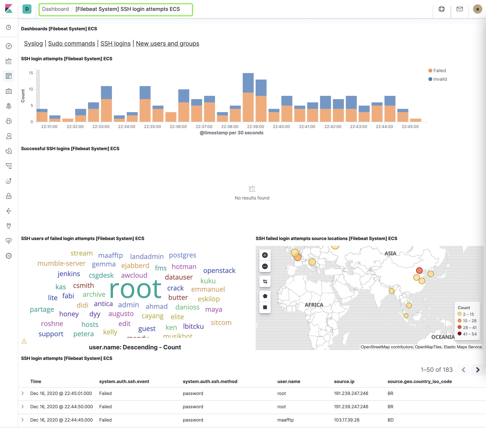
在 Dashboard 的搜索框中搜索并查看 ‘[Filebeat Nginx] Overview ECS' Nginx 服务器的日志分析仪表板，如下图所示。
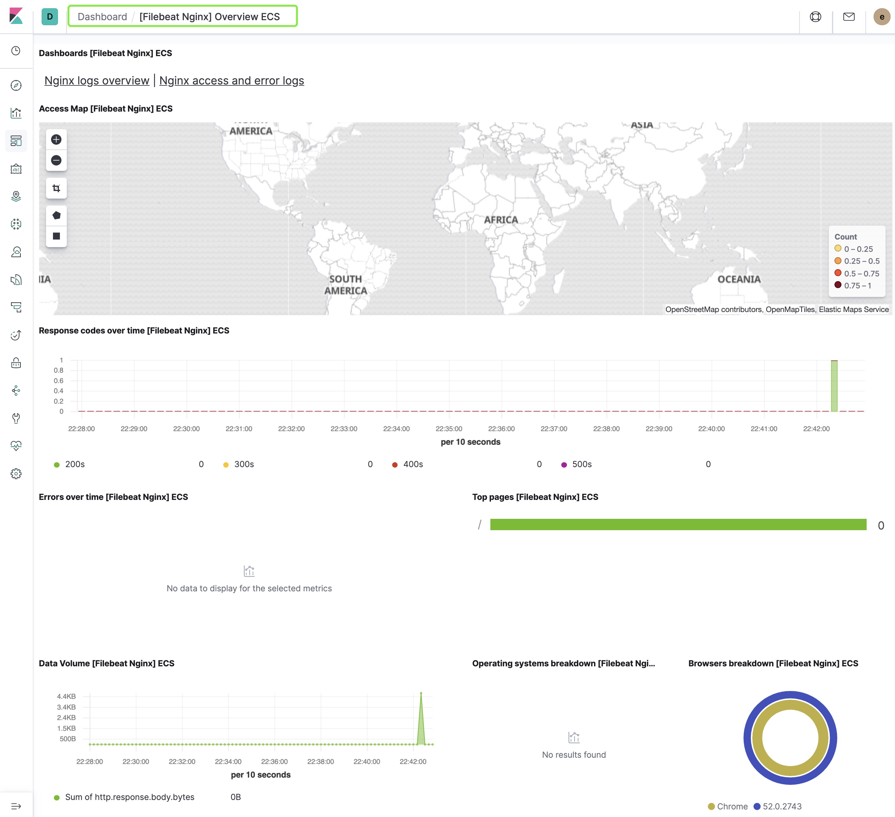
查看 Logs 应用
在 Kibana 的左侧栏菜单中，点击 ‘Logs' 图标。
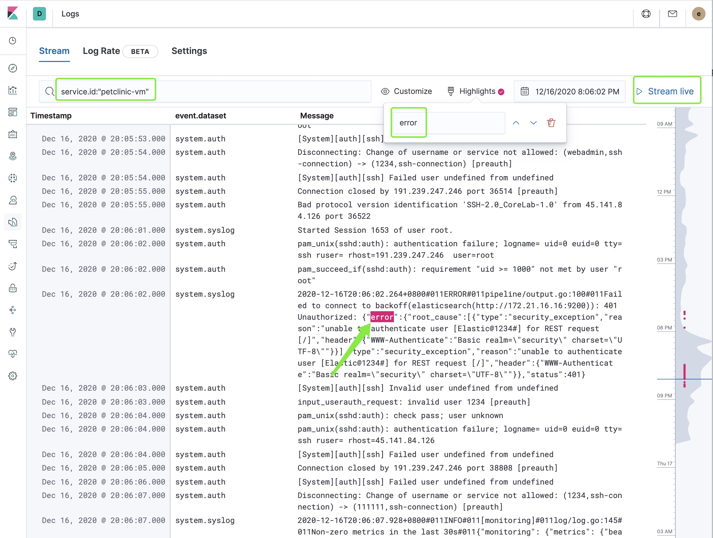
在这个统一的日志流查看界面中，尝试使用以上三个高亮的功能：
- 按日志字段搜索：尝试搜索
service.id: petclinic-vm - 日志高亮显示：输入屏幕上能看到的预期存在的关键词，观察屏幕上的变化，特别是最右侧的波形图的变化。
- 点击
Stream live开启日志数据实时数据流功能，这个功能近似于 tial -f 的查看日志文件的更新。
打开 ‘Metric' 菜单中的主机查看模式，点击主机图标，打开主机关联数据查看菜单，选择 Host Logs 选项。
安装 APM 服务器
安装 APM Server 软件。
yum install https://mirrors.cloud.tencent.com/elasticstack/7.x/yum/7.5.1/apm-server-7.5.1-x86_64.rpm
cd /etc/apm-server/
在 APM 服务器的配置目录中，查看主配置文件 apm-server.yml 的默认内容，确保其中的内容至少包含以下内容。
apm-server:
host: "0.0.0.0:8200"
rum:
enabled: true
output.elasticsearch:
hosts: ["172.21.16.16:9200"]
username: "elastic"
password: "Elastic@1234#"
或者用以上的内容替换默认的配置文件。
配置参数含义：
- 设置 APM 服务器对外部所有网络地址提供服务，端口为 8200
- 启用实时用户体验监控
- 指向运行在本机的 Elasticsearch 服务
在命令行下初始化 APM 服务器。命令相同。
apm-server setup
apm-server -e
观察服务的日志，在没有报错的情况下，启动 apm-server 后台服务。
首先修改一些文件的属性，然后启动 APM 服务。
chown apm-server:apm-server /var/lib/apm-server/meta.json
chown apm-server:apm-server /etc/apm-server/apm-server.yml
chmod 0600 /etc/apm-server/apm-server.yml
systemctl start apm-server
systemctl enable apm-server
systemctl status apm-server
以上最后一条命令应该显示 APM 服务器处于正常运行状态。
运行宠物诊所演示程序
首先确认一下当前操作系统中 JDK 的版本号，没有的话需要自行安装。
java --version
openjdk 11.0.8 2020-07-14
OpenJDK Runtime Environment AdoptOpenJDK (build 11.0.8+10)
OpenJDK 64-Bit Server VM AdoptOpenJDK (build 11.0.8+10, mixed mode)
进入 git clone 下载的目录中 cd elastic-labs-qq/。查看 ls petclient/elastic-apm-agent-1.18.1.jar 文件。该文件和示例程序在同一个文件夹中。
启动宠物诊所后台的核心应用服务，并且同时挂载 javaagent 代理。
java -javaagent:elastic-apm-agent-1.18.1.jar -Delastic.apm.service_name=petclinic-spring -Delastic.apm.server_urls=http://localhost:8200 -jar spring-petclinic-1.5.16.jar
启动参数简介：
- 声明该服务的名称为 petclinic-spring
- 加载 elastic java agent 的 jar 文件
- 配置 APM 服务器的位置网址
- 另外这个用默认使用了内置的数据库
上面的这条命令会启动宠物诊所演示应用系统的后台服务，并加载了Elastic APM 对 Java 应用的无痛埋点代理。
在一个新的 SSH 登录窗口中，启动宠物诊所的前端应用，这是一个 node.js 的应用，先确保当前练习的操作系统中已经安装了 node 的版本。
npm version
{ npm: '3.10.10',
ares: '1.10.1-DEV',
http_parser: '2.8.0',
icu: '50.1.2',
modules: '48',
napi: '3',
node: '6.17.1',
openssl: '1.0.2k-fips',
uv: '1.40.0',
v8: '5.1.281.111',
zlib: '1.2.7' }
进入前端应用的目录 cd /root/elastic-labs-qq/petclinic/frontend ，查看该应用的配置文件 config.js ，修改前两个参数为 CentOS 虚拟机的本地 IP 地址 和 公网 IP 地址，其内容如下：
var config = {
apm_server: process.env.ELASTIC_APM_SERVER_URL || 'http://172.16.0.15:8200',
apm_server_js: process.env.ELASTIC_APM_SERVER_JS_URL || 'http://188.131.151.204:8200',
apm_service_name: process.env.ELASTIC_APM_SERVICE_NAME || 'petclinic-node',
apm_client_service_name: process.env.ELASTIC_APM_CLIENT_SERVICE_NAME || 'petclinic-react',
apm_service_version: process.env.ELASTIC_APM_SERVICE_VERSION || '1.2.0',
api_server: process.env.API_SERVER || 'http://localhost:8080',
api_prefix: process.env.API_PREFIX || '/petclinic/api',
address_server: process.env.ADDRESS_SERVER || 'http://localhost:5000',
distributedTracingOrigins: process.env.DISTRIBUTED_TRACINGS_ORIGINS || 'http://petclinic-client:3000,http://petclinic-server:8000,http://localhost:4000,http://localhost:8080,http://localhost:8081'
}
重要配置参数讲解：
- node.js 服务的名称和版本
- 前端应用服务器的地址和端口
- apm_server node.js 应用服务器端连接 APM 服务器的网址
- apm_server_js node.js 应用客户端（远程用户浏览器）连接 APM 服务器的网址
这个应用前端的代码中已经进行了 Elastic APM 对 Node.js 应用的无痛埋点配置，在进行一个简单的依赖包安装命令后，启动该应用。
npm start
观察宠物诊所前端应用的正常启动过程。然后在浏览器中访问网址：http://public_IP:4000/ ，访问公网 IP 的 4000 端口，如果宠物诊所系统的工作正常，应该看到如下界面。
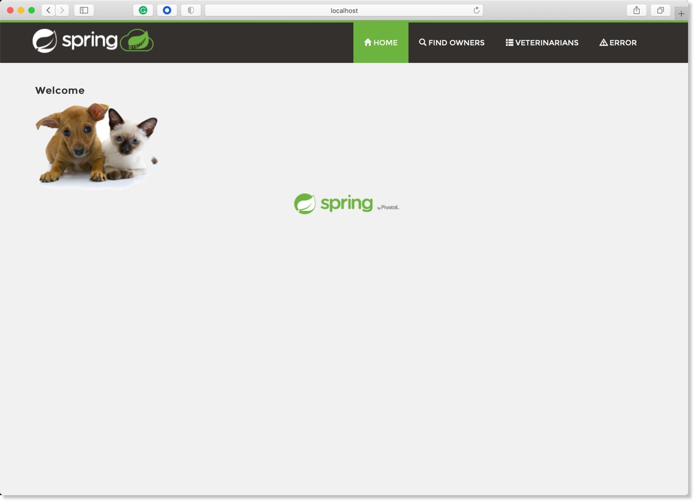
点击 Home 按钮右侧的其它三个菜单，多点击几次，制造一些人为的系统功能调用，目的是生成 APM 追踪数据。
下一步进入 APM 应用查看追踪数据结果。
查看 APM 应用
在 Kibana 的左侧栏菜单中，点击 ‘APM' 图标。
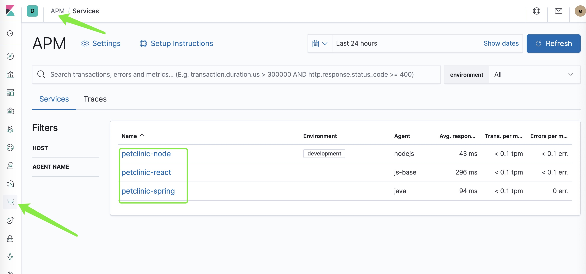
使用 APM 应用的界面查看上一步生成的追踪数据。
- 点击每一个服务的详细信息，了解它的交易性能概要、报错、性能指标。
- 点击服务地图查看宠物诊所这个多层应用的追踪信息。 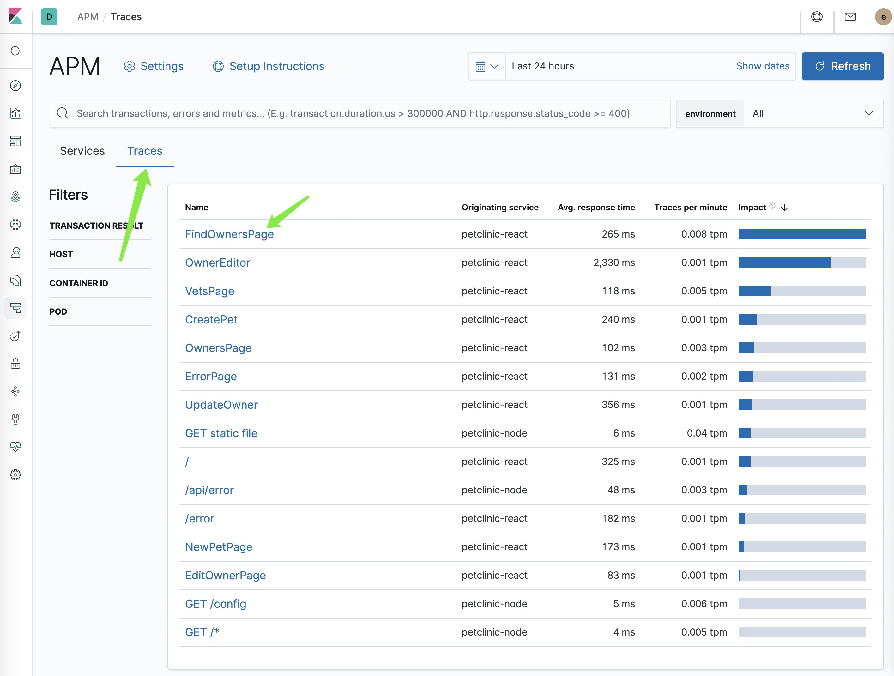
最后一步深度查看某个服务的详细交易追踪数据和关联数据查看。

配置 Nginx 为宠物诊所的反向代理
让 Nginx 代理所有 80 端口的访问到 node.js 访问的 4000 端口上。
修改 nginx.conf 配置文件，在 location 这个段落中增加一行。
location / {
proxy_pass http://localhost:4000;
}
重启 nginx 服务器。
systemctl restart nginx
systemctl status nginx
在 Nginx 服务状态正常的情况下，在浏览器中访问 CentOS 虚拟机的公网 IP 地址。例如：http://188.131.151.204/ 。你将依然能够正常访问宠物诊所应用的所有页面。
增加宠物诊所应用系统的健康检查探针
在宠物诊所系统正常运行的状态下，在 Heartbeat 的健康检查系统中增加一个新的用于检查改服务前端的探针。
进入 /etc/heartbeat/monitors.d 目录。添加一个名为 petclinic.yml 内容如下的配置文件。
- type: http
id: Petclinic-100
name: Petclinic-Svc
schedule: '@every 5s'
hosts: ["http://188.131.151.204/"]
ipv4: true
ipv6: true
mode: any
等待5 秒后，观察 Uptime 的界面，名为Petclinic-Svc 的服务应该出现，该探针将持续监控前端服务的 4000 端口，并返回健康检查的结果到 Uptime 应用中。有可能需要重启一下 heartbeat 服务。
再添加一个名为 ext-svc.yml 内容如下的配置文件。
- type: http
id: Elastic-100
name: Elastic-cloud
schedule: '@every 5s'
hosts: ["https://cloud.elastic.co"]
ipv4: true
ipv6: true
mode: any
等待5 秒后，观察 Uptime 的界面，名为Elastic-cloud 的服务应该出现，并返回健康检查的结果到 Uptime 应用中。
使用 Canvas 的画布功能，定制如下的 SLO 监控大屏。
创建 heartbeat-* 索引模式
点击 Kibana 界面左下角的 management 图标，点击 index pattern ，点击 Create index pattern 按钮，输入 ‘heartbeat-*' 后，点击 Next step 按钮
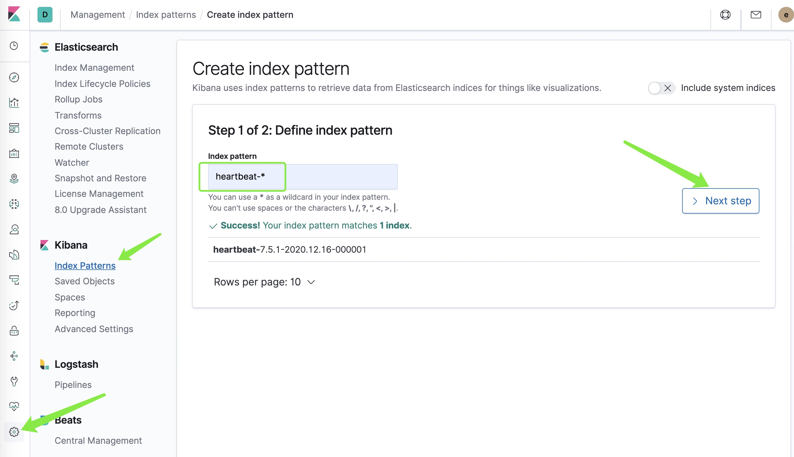
在 Time Filter field name 下方，选择 @timestamp 字段，最后点击 点击 Create index pattern 按钮。
在 Kibana 的 Discovery 功能里查看，刚才创建的heartbeat-*索引模式，增加 monitor.name等于 Petclinic-Svc 的过滤器，详细查看一条监控数据的所有字段。
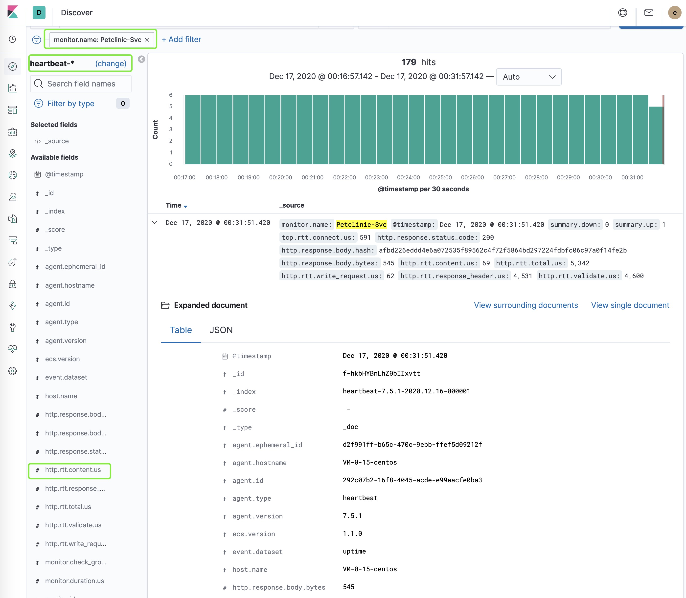
点击左侧的 ‘http.rtt.total.us' ，查看宠物诊所前端 HTTP 访问延迟的探针检测数值的分布情况。
创建宠物诊所前端 HTTP 延迟监控图表
在 Kibana 中，使用 TSVB 时序数据可视化分析控件，分析和展示 Heartbeat 健康检查探针的监控结果。
在 Kibana 的左侧菜单中，点击 Visualize 图标，点击 Create visualization 按钮，选择 TSVB 控件。
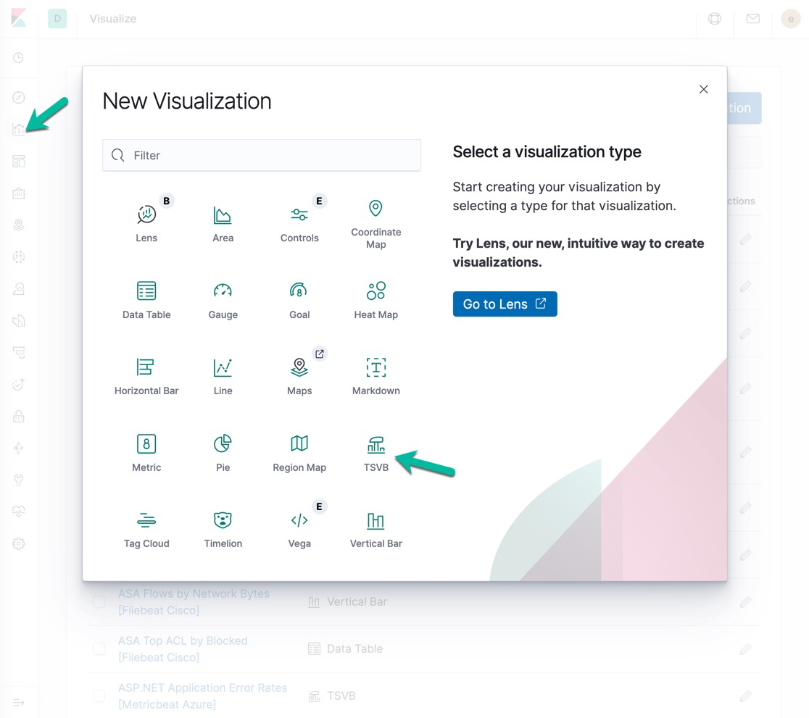
在 Panel options 中输入查询条件。
- Index pattern : heartbeat-*
- Time field : @timestamp
- Panel filter : monitor.id : "Petclinic-100"
如下图所示：
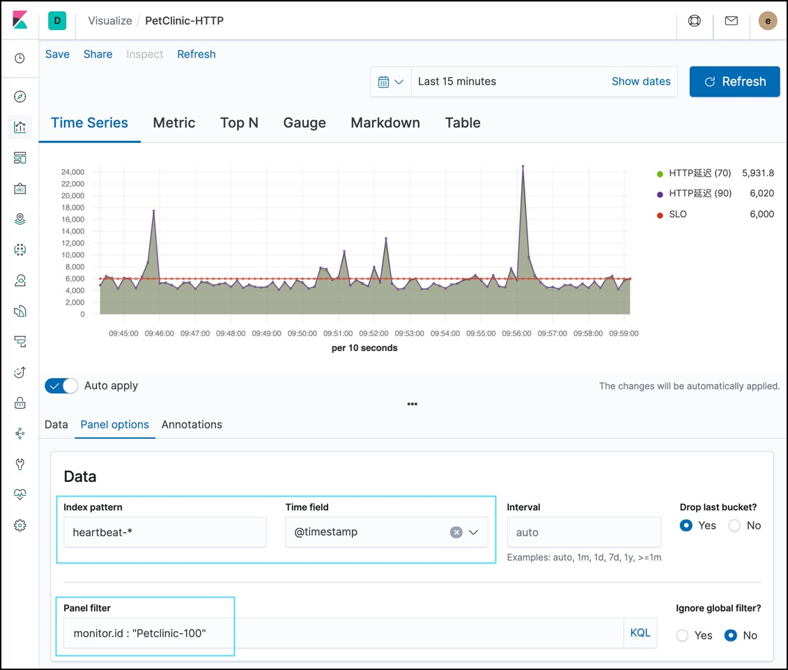
在 Data 这一个标签也中创建如下图所示的三个时序数据绘制曲线。
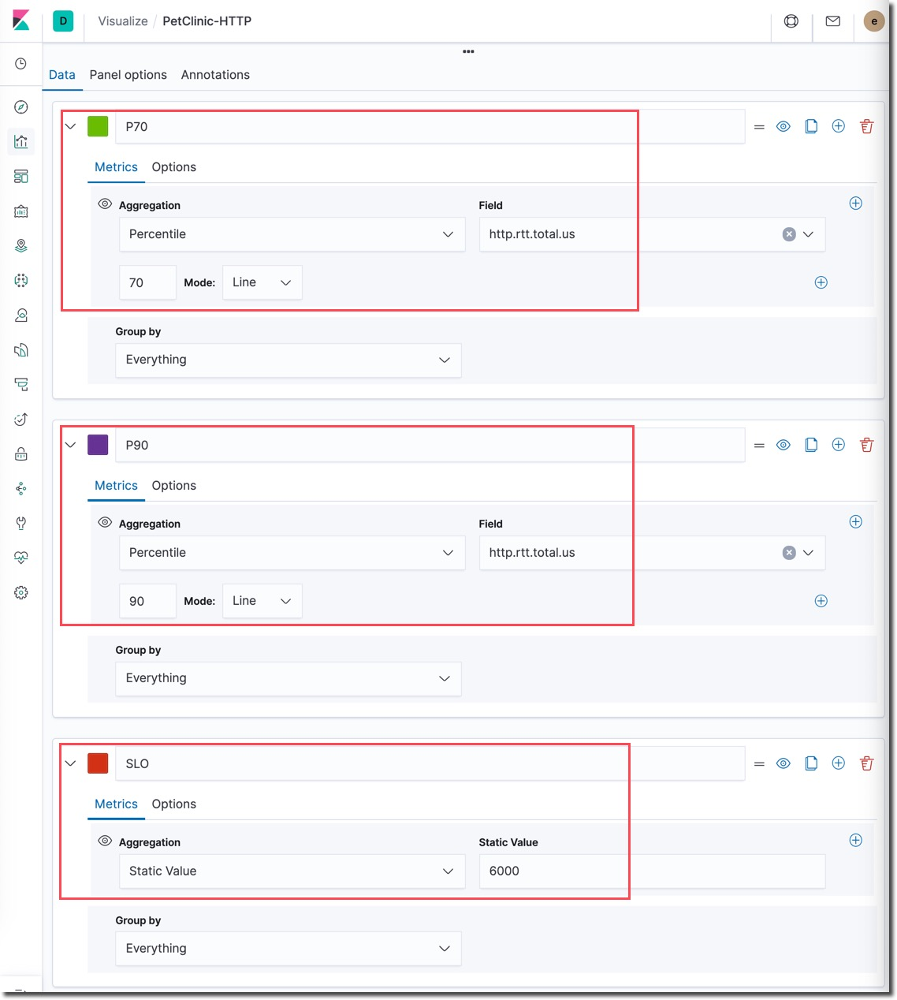
相关字段解释：
- Aggregation : Percentile 是对 field 的数据做的百分位聚会运算，得出该指标在 p70，p90 下的表现。
- Field : 选择的是 http.rtt.total.us ，这是 Heartbeat 的 HTTP 探针采集到的某个 http 端点的延迟时长，单位是 us。
- Aggregation : Static Value 是对在图形上画一根静态的线，加上这个指标就是我们选中的宠物诊所应用系统的 SLI 之一，它反映出页面打开的延迟速度，我们对其设置的 SLO 管理目标是 6000。
点击右上角的 Refresh 按钮，还可以在这个按钮的左侧菜单中选择不同的观测时段。
最后，点击页面左上角的 Save 链接， 保存当前的 TSVB 可视化分析图表，保存名称为 ‘PetClinic-HTTP'
分析你目前所掌握的来自 heartbeat、filebeat、metricbeat 的数据，参考已有的 Dashboard 的数据，根据 SRE 梳理和定制 SLI 的方法，推荐参考书籍《Google SRE 工作手册》，将梳理出来的 SLI 都制作出以上风格的实施监控图表。
SLO 创建服务质量监控仪表板
可以为每一套应用系统创建一个 SLO 服务质量监控仪表板，将该应用系统的所有 SLI 监控指标都放进去，SRE 工作手册推荐一套应用系统的 SLI 数量从精选的 3 到 5 个实际能影响最终用户使用体验的指标开始。
在 Kibana 中点击左侧的 Dashboard 图标，点击页面右侧的 Create dashboard 按钮，进入仪表板创建页面。
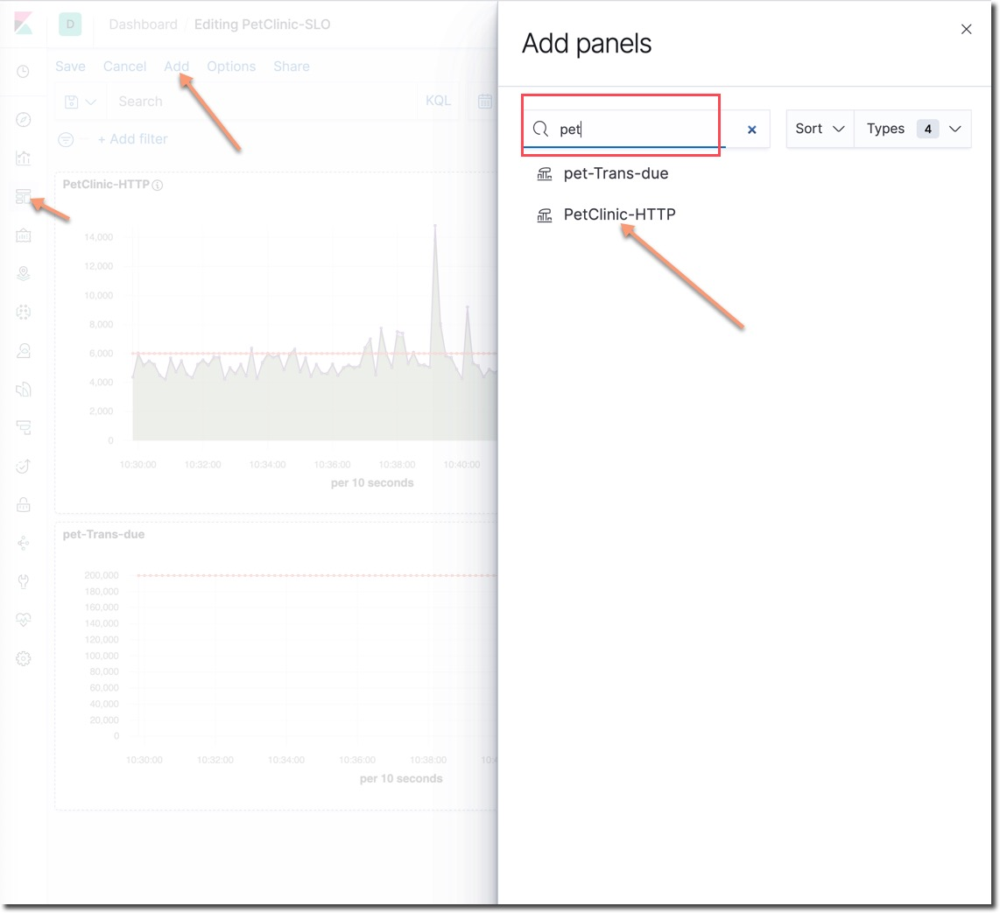
在以上页面中， 点击 Add 链接， 在搜索框中输入 pet ，选中上一步我们所创建的 TSVB 时序数据实时分析控件。用鼠标推动的方式调整这个控件在页面中的大小和位置。
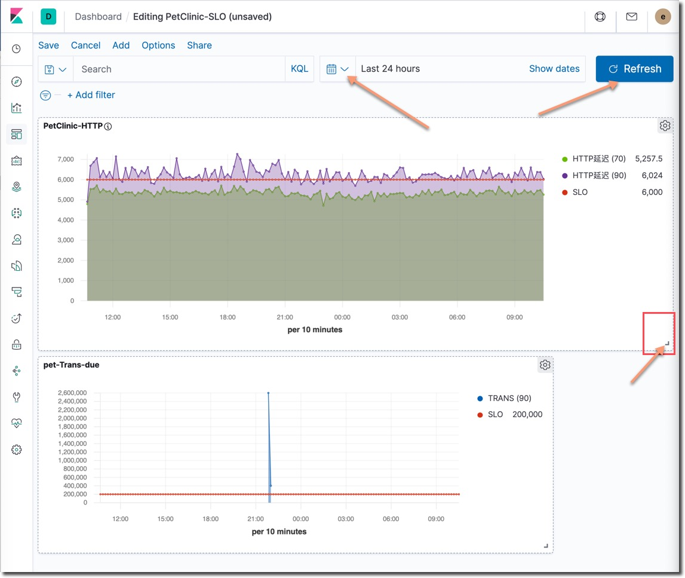
点击每个图表右下角的三角图表，以上每个数据显示控件的大小都可以调整，位置都可以拖动。
在点击日历图标之后，选择需要查看的监控时段，点击刷新按钮，更新这个仪表板中所有控件的数据。